Vícesvazková monografie
3.1.2 Vícedílná monografie
Vícedílná monografie by se dala ve zktrace definovat tím, že musí obsahovat dvě úrovně popisu: titul vícedílné monografie a typicky více jednotlivých svazků (dílů). V NDK standardu jsou jasně definované hodnoty, které musí být obsaženy v katalogizačním záznamu, aby se dalo říci, že jde o vícedílnou monografii:
-
kombinace těchto hodnot v polích MARC21: LDR/07="m" a zároveň LDR/19="a"
-
hodnota issuance = multipart monograph
Je tedy nutné vytvořit nejprve jeden záznam pro celý titul vícedílné monografie a hierarchicky pod ním záznamy jednotlivých svazků.
Příklad, jak vypadá již zpracovaná vícedílná monografie, prezentovaná v systému Kramerius: [https://kramerius.lib.cas.cz/uuid/uuid:3966d0bb-ff73-46ac-a3c2-585f34da0580]{.underline}
3.1.2.1 Vytvoření digitálního dokumentu (objektu)
V navigační liště úložiště zvolíme „Nový objekt".
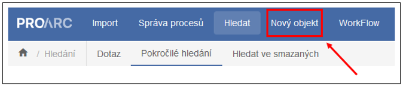
{width="6.267716535433071in" height="0.4444444444444444in"}Otevře se dialogové okno stejné pro zakládání všech modelů (typů dokumentů):
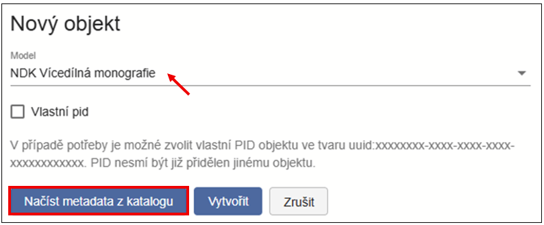
{width="6.267716535433071in" height="3.138888888888889in"}Vybereme nadřazenou úroveň tj. NDK Vícedílnou monografii.
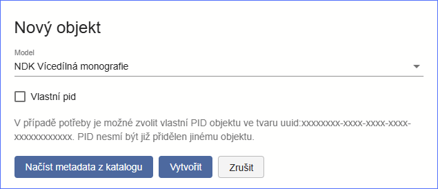
{width="6.267716535433071in" height="2.7083333333333335in"}-
Model -- v roletce si vybereme typ objektu, který chceme vytvořit. V nabídce jsou typy dokumentů dle standardů NDK i pro dokumenty, které standard zatím nemají popsán (modely STT, kroniky apod.).
-
Vlastní PID - určeno pro případy, kdy je nutné opravit nebo doplnit dokument, který v ProArcu není, ale je již v DK. Příklad bude uveden v budoucí kapitole o speciálních importních funkcích.
-
Nové objekty primárně zakládáme stažením dat z katalogu, ale tlačítkem „Vytvořit" lze otevřít prázdný formulář a metadata zadat manuálně.
Vybereme si z možností, podle kterých lze vyhledávat v příslušném katalogu (např. zde vyhledáváme podle signatury)
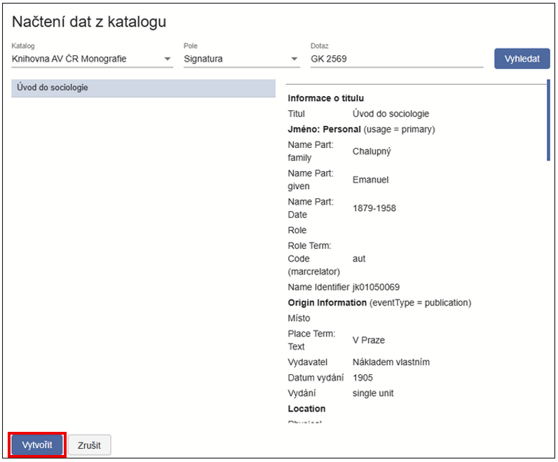
{width="6.267716535433071in" height="2.6666666666666665in"}Zadáme vyhledávací dotaz a potvrdíme kliknutím na pole "Vyhledat"
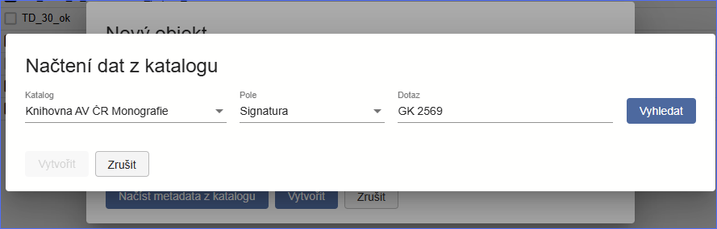
{width="6.267716535433071in" height="2.013888888888889in"}Objeví se katalogový záznam ve formátu MARC21. Výběr záznamu potvrdíme tlačítkem "Vytvořit"
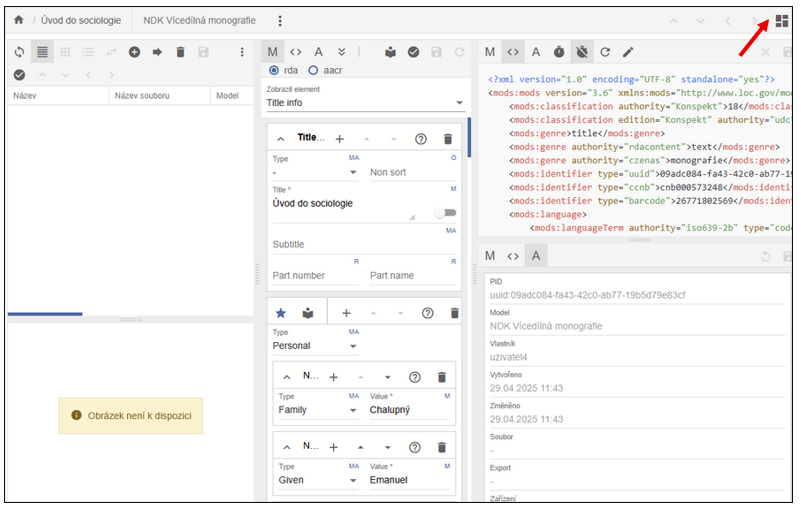
{width="6.267716535433071in" height="5.180555555555555in"}Před vlastním založením objektu lze metadata upravit v náhledu formuláře:
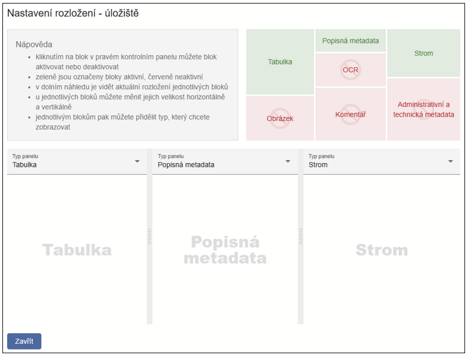
{width="6.267716535433071in" height="6.694444444444445in"}Volbou „Vytvořit a přejít do objektu" (resp. „Vytvořit") systém objekt uloží do databáze.
Systém hlídá povinná pole v souladu se standardy NDK. Pokud pole s označením M (Mandatory) není vyplněno, objekt se neuloží a chybná pole se červeně označí.
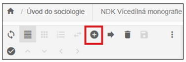
{width="4.270833333333333in" height="1.9479166666666667in"}Po případné opravě a úspěšném uložení objektu nás systém přepne přímo do editačního okna („Vytvořit a přejít do objektu") nebo do úložiště („Vytvořit"), odkud se do editace dostaneme dvojklikem na objektu. Zde můžeme pracovat s metadaty již vytvořeného objektu.
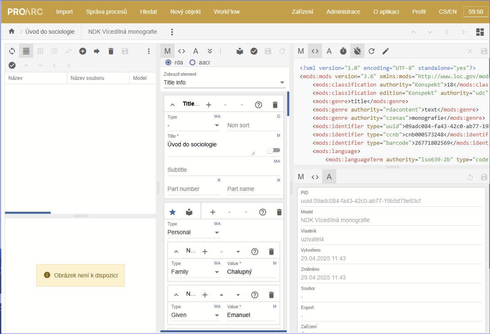
{width="6.267716535433071in" height="4.263888888888889in"}Šíři podoken lze měnit tažením myší. Jejich uspořádání v editaci je velmi variabilní, lze si je upravit kdykoli během práce. Provádí se pomocí ikony vpravo na liště:
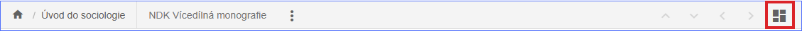
{width="6.267716535433071in" height="0.25in"}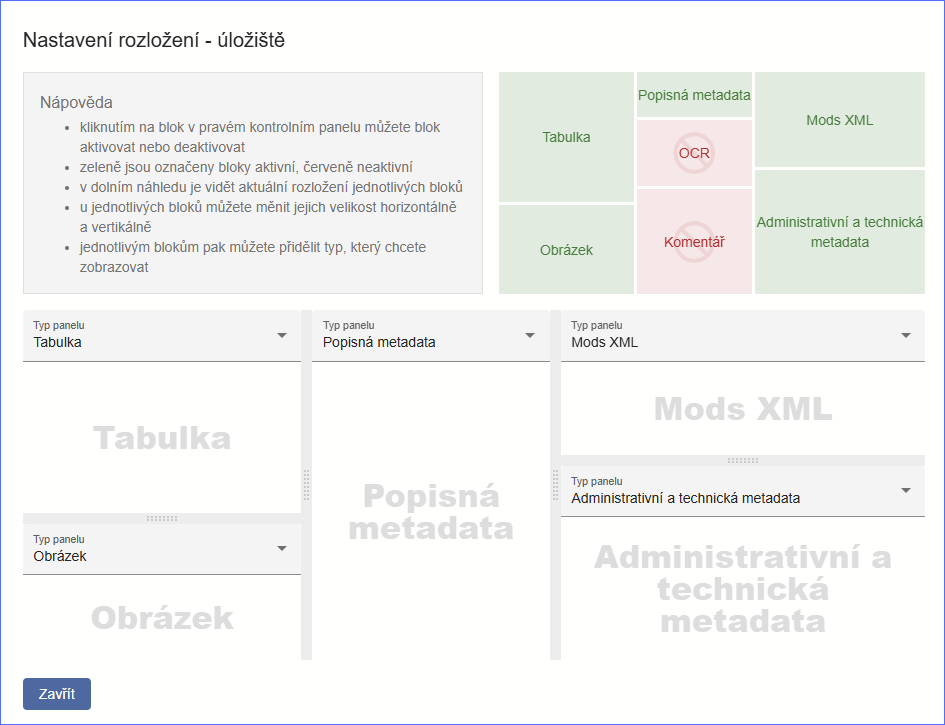
{width="6.267716535433071in" height="4.805555555555555in"}Pro popis vícedílné monografie doporučujeme následující rozložení oken, kde je v pravé části vidět strom, v němž bude znázorněna struktura celého dokumentu (tedy titul vícedílné monografie a pod ním jednotlivé svazky, případně další vnitřní části a strany):
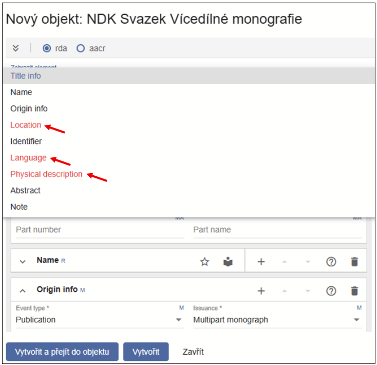
{width="6.267716535433071in" height="4.833333333333333in"}Kliknutím na "+" přidáme nový, podřízený objekt, kterým musí být v tomto případě NDK Svazek Vícedílné monografie
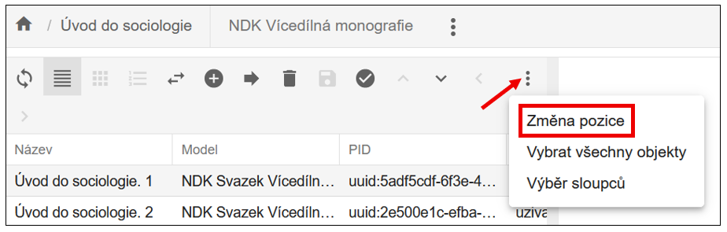
{width="6.267716535433071in" height="3.7777777777777777in"}Opět se otevře dialogové okno shodné pro zakládání všech modelů (typů dokumentů).
Výběr modelu je přednastaven na ten, u něhož se předpokládá, že sem patří (tedy v tomto případě NDK Svazek Vícedílné monografie).
Na výběr je pozice, kam se nový objekt ve struktuře založí ("Na konec" nebo "Za vybraný").
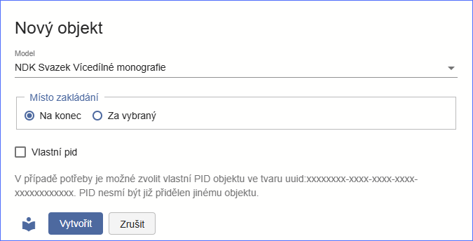
{width="6.267716535433071in" height="3.1944444444444446in"}Opět lze zvolit založení stažením z katalogu nebo vytvořením přes prázdný formulář.
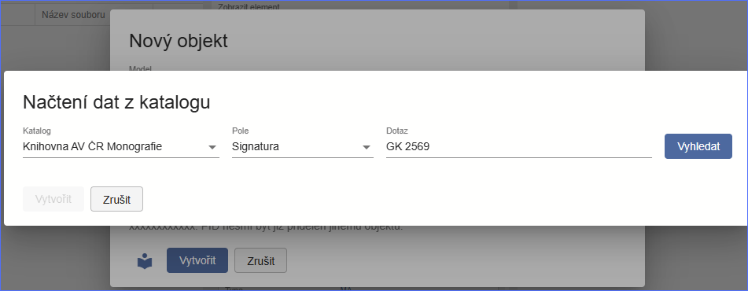
{width="6.267716535433071in" height="2.4444444444444446in"}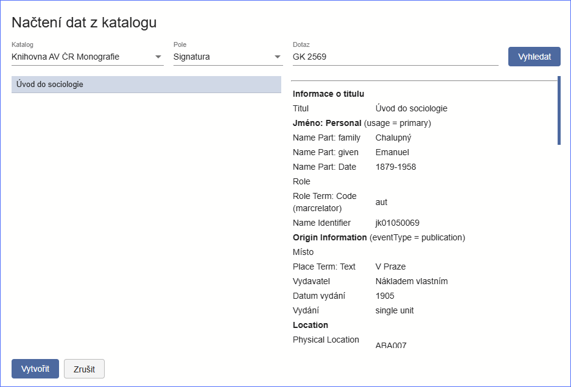
{width="6.267716535433071in" height="4.25in"}Zkontrolujeme a případně upravíme metadata. Pokud známe číslo části (Part number) případně název (Part name), tak jej zapíšeme.
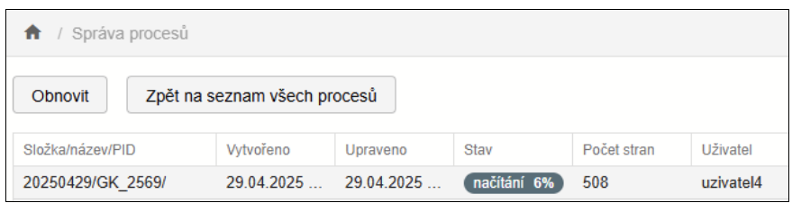
{width="6.267716535433071in" height="5.944444444444445in"}Můžeme si zvolit, zda nový objekt pouze vytvoříme nebo zda jej vytvoříme a rovnou se do něj přepneme. Doporučujeme zvolit pouze "Vytvořit" a nejprve si založit všechny svazky.
Vpravo vidíme stromovou strukturu zakládaného objektu.
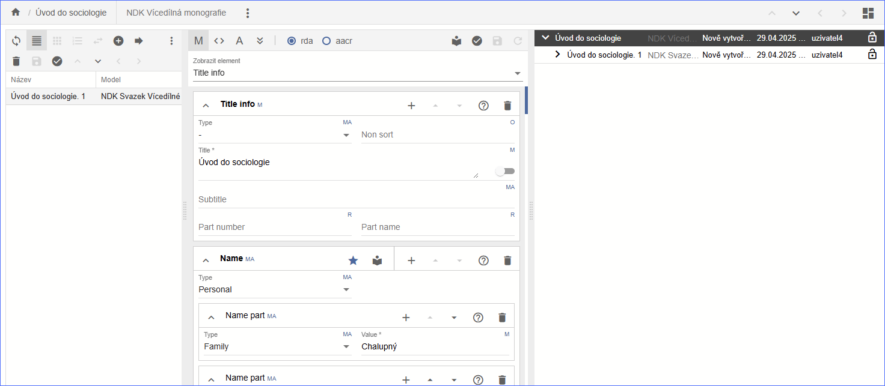
{width="6.267716535433071in" height="2.736111111111111in"}Nový objekt Svazku Vícedílné monografie můžeme vytvořit i bez stažení z katalogu. V tom případě se z vrchní úrovně propíší vybrané údaje (podle NDK standardu).
Údaje, které je potřeba doplnit ručně jsou v rozbalovací liště zvýrazněny červeně.
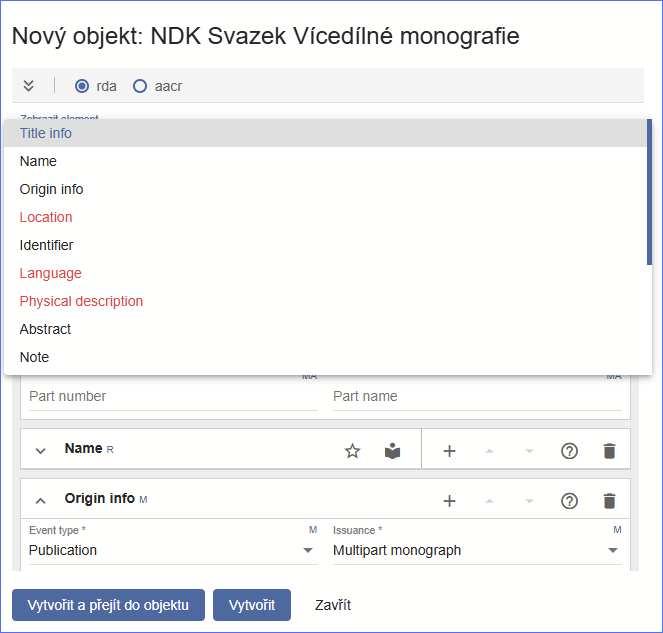
{width="6.267716535433071in" height="5.986111111111111in"}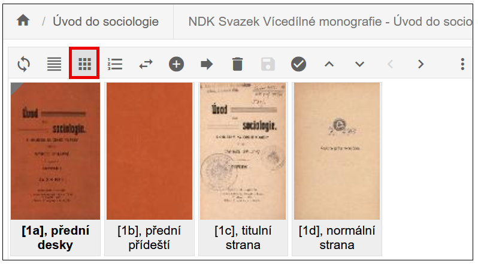
{width="6.267716535433071in" height="5.972222222222222in"}Na následujícím obrázku je nadřazená úroveň (titul vícedílné monografie) vyznačena červeně a podřazené části (jednotlivé díly) jsou znázorněny žlutě.
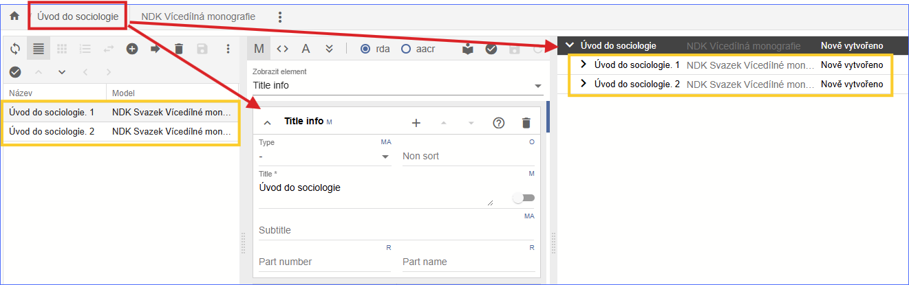
{width="6.267716535433071in" height="1.9722222222222223in"}Kliknutím na konkrétní svazek vidíme jeho umístění ve stromové struktuře (pravý sloupec) a metadatový záznam (prostřední sloupec).
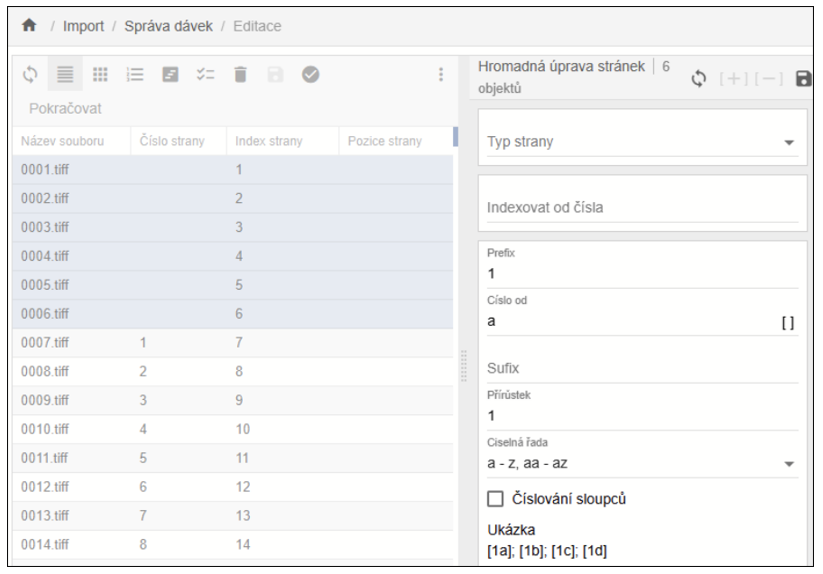
{width="6.267716535433071in" height="1.9583333333333333in"}Pořadí jednotlivých svazků lze změnit přetažením myší (část obrazovky se lehce zamlží) a následným uložením přes ikonu diskety.
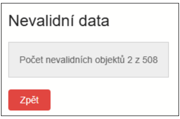
{width="6.267716535433071in" height="2.1944444444444446in"}3.1.2.2 Načtení dat
S uživatelem v ProArcu jsou svázány pracovní adresáře, o jejich namapování uživatele informuje administrátor.
-
Do adresáře určeného k importu připravíme skeny ve formátu TIFF, k nim vytvořené OCR soubory ve formátu TXT a ALTO soubory (ve formátu XML). Pro NDK modely NELZE importovat tiffy bez OCR a ALTO.
-
V levé části navigační lišty ProArcu zvolíme tlačítko „Import" a přejdeme tak do importní obrazovky.
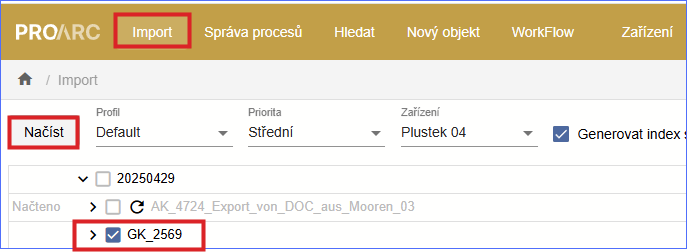
{width="6.267716535433071in" height="2.3055555555555554in"} -
Zde vybereme adresář s daty dokumentu, který chceme zpracovávat
-
Vybereme „Profil načítání" podle zpracovávaného modelu. V případě NDK modelů pro textové dokumenty použijeme profil „Default". Další profily budou popsány se souvisejícími procesy.
-
„Priorita" je defaultně nastavena na hodnotu „Střední". Zvolením vyšší priority můžeme načítaný soubor předřadit ve frontě souborům s nižší prioritou, jinak se zařadí na její konec.
-
„Zařízením" se rozumí přístroj, na kterém byla načítaná data připravena -- typicky je jím skener. Pro většinu modelů je zařízení povinné, teprve po jeho výběru se aktivuje tlačítko „Načíst"
-
Funkce „Generovat index stránek" je defaultně zapnuta, postará se přiřazení indexů stranám dokumentu již při načítání.
-
Ikona
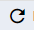
{width="0.31454943132108487in" height="0.27754374453193353in"} slouží k opětovnému načtení již načtené dávky (z různých důvodu je někdy potřeba opět načíst tutéž dávku dokumentů - např. vadný soubor apod.). ProArc v importním adresáři vytváří pomocné soubory, které je potřeba smazat před opětovným načtením -- tato ikona soubory automaticky promaže. -
Je možné vybrat pro import i více dávek najednou - dávky se řadí do fronty a načítají se postupně.
Po spuštění načítání můžeme v případě jedné dávky sledovat v dialogovém okně postup načítání. Toto okno je možné zavřít a načítání bude probíhat dále na pozadí. Stav lze sledovat ve Správě importních procesů:
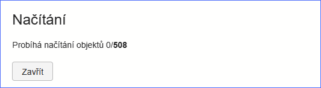
{width="5.552083333333333in" height="1.53125in"}V případě souběžného spuštění více dávek přejdeme rovnou do Správy importních procesů a vybereme „Zobrazit frontu načítání".
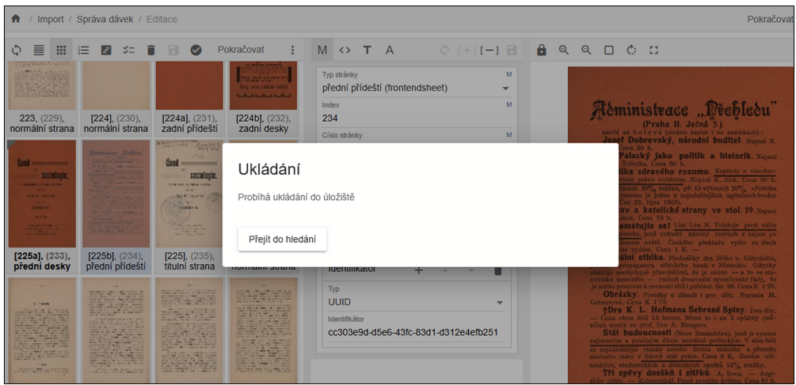
{width="4.265458223972003in" height="2.0375185914260716in"}Zde pak vidíme průběh načítání v tabulkovém zobrazení, stav lze aktualizovat tlačítkem „Obnovit".
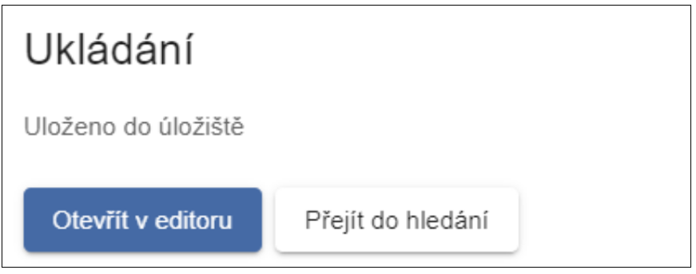
{width="6.267716535433071in" height="2.125in"}Je-li načítání ukončeno, proces z tohoto zobrazení zmizí a je zapotřebí přejít „Zpět na seznam všech procesů". Zde označíme načtenou dávku ke zpracování -- na liště se objeví tlačítka „Načíst znovu" a „Pokračovat":
 {width="6.267716535433071in"
height="2.361111111111111in"}
{width="6.267716535433071in"
height="2.361111111111111in"}
3.1.2.3 Popis obrazových dat (paginace)
Volbou „Pokračovat" po načtení se dávka otevře v okně „Správa dávek -- editace". I tady lze podokna uspořádat pomocí ikony
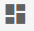
{width="0.16978346456692914in" height="0.15480205599300087in"}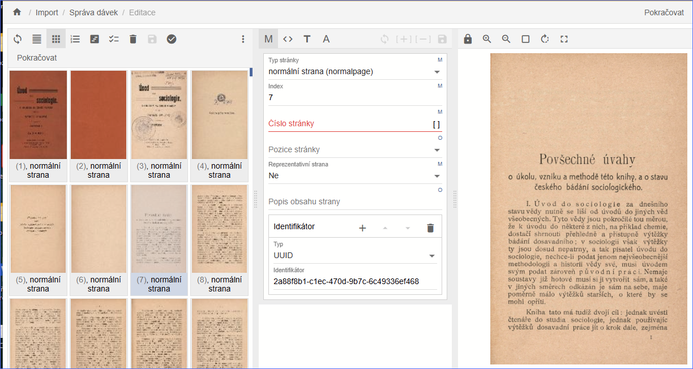
{width="6.267716535433071in" height="3.3333333333333335in"}-
Každé podokno má na horní liště svou sadu použitelných funkcí, při posunu myši na ikonu se zobrazí popis funkce.
-
Rozložení a výběr zobrazovaných sloupců lze změnit v okně „Profil" [4.1.3]{.underline}.
-
Změníme-li ve formuláři popis jedné strany, po stisknutí ENTER se změna uloží a automaticky se přesuneme na další stranu
-
Pracovat lze se zobrazením náhledů skenů nebo s řádkovým zobrazením, které lze podle potřeby přepínat na liště.
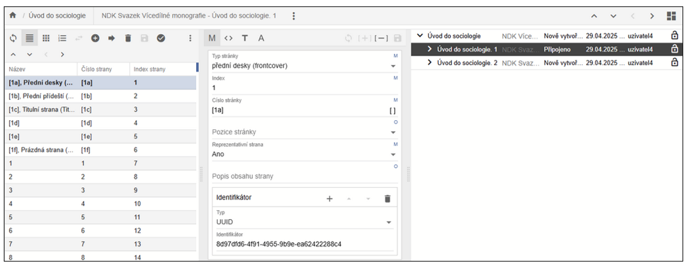
{width="5.145833333333333in" height="0.90625in"}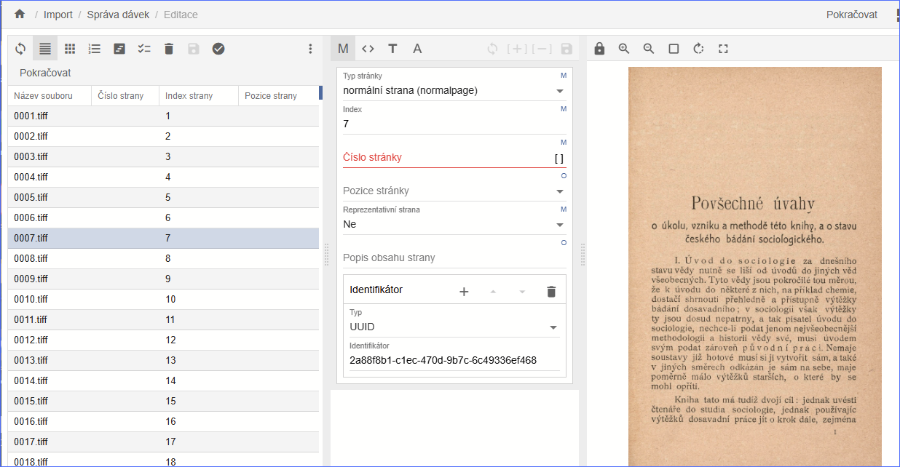
{width="6.267716535433071in" height="3.25in"}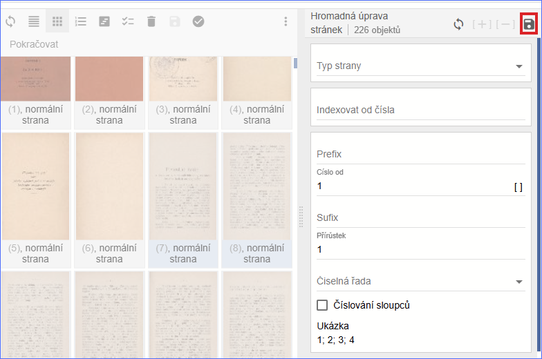
{width="6.267716535433071in" height="4.152777777777778in"}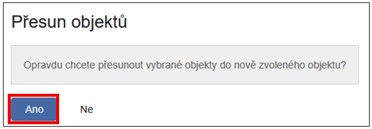
{width="6.267716535433071in" height="4.388888888888889in"}Hromadné paginování lze provést označením bloku myší nebo pomocí kláves SHIFT/CTRL a nastavením parametrů popisu ve formuláři. Pro uložení změn je nutné použít klávesu ENTER nebo ikonu diskety.
Ve chvíli, kdy jsou všechny objekty popsány povinným elementem (v tomto případě číslem strany), použijeme tlačítko „Pokračovat". Proběhne validace a pokud nejsou všechny strany očíslovány, objeví se informace o chybě a chybná strana je červeně podbarvena kvůli snazší identifikaci.
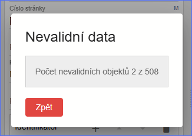
{width="3.3958333333333335in" height="2.4166666666666665in"}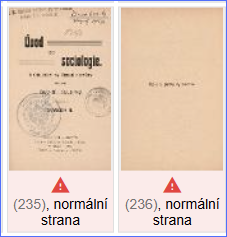
{width="2.3645833333333335in" height="2.46875in"}Po opravě a úspěšné validaci otevře tlačítko „Pokračovat" obrazovku pro výběr nadřazeného objektu, tj. titulu, k němuž patří naimportované a popsané strany.
Vyberte nadřazený objekt:
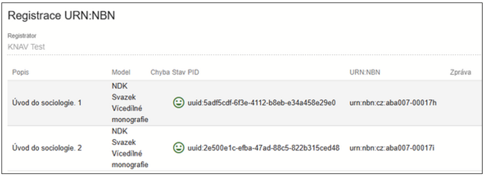
{width="6.267716535433071in" height="3.6527777777777777in"}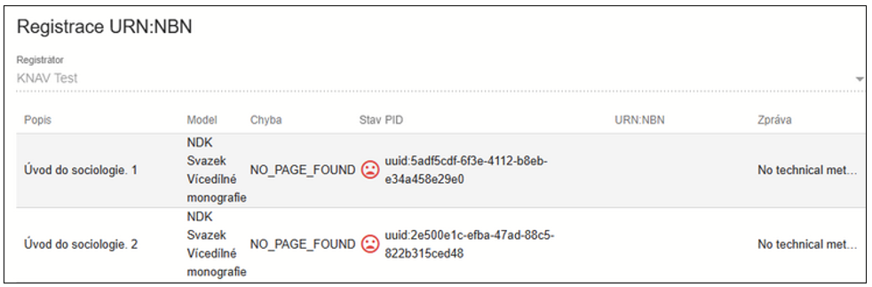
{width="6.267716535433071in" height="3.3333333333333335in"}Pro zkrácení seznamu k výběru zadáme patřičný model a blíže určíme titul např. částí názvu. V horní části okna vybereme ze seznamu cílový objekt a po uložení můžeme objekt buď otevřít rovnou v editoru úložiště nebo si jej najdeme v hlavním okně úložiště.
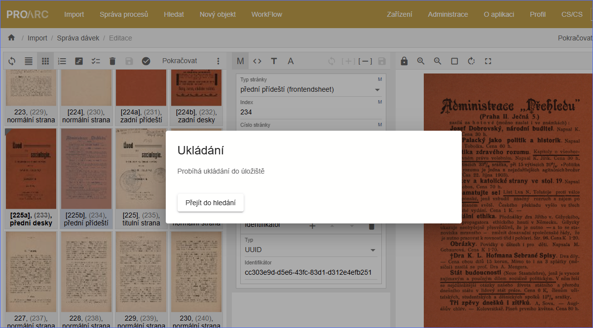
{width="6.267716535433071in" height="3.4722222222222223in"}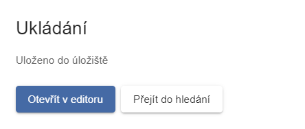
{width="4.625645231846019in" height="1.9586067366579178in"}3.1.2.4 Úprava (editace) dokumentu
Zobrazení v editoru je stejné, jako v případě nově založeného objektu (viz kap. 3.1.1.1 ), nyní ale můžeme vidět i seznam přiřazených stran a jejich náhledy. Můžeme upravovat metadata jak pro strany, tak na úrovni titulu, a to ve formuláři i přímo v XML.
Při každé provedené změně se aktivuje jinak zašedlá ikona diskety a změnu je zapotřebí jejím stiskem uložit.
Také zde má každé podokno lištu s řadou funkcí, jejichž popis se zobrazí po najetí myší na ikonu. Méně používané funkce jsou skryté pod třemi tečkami.
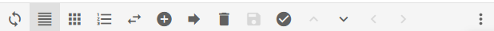
{width="6.267716535433071in" height="0.3888888888888889in"}Podokno se zobrazenými stranami (ať už ve formě tabulky nebo dlaždic) umožňuje strany nebo jejich skupiny přesouvat na nové pozice v rámci dokumentu -- myší nebo pomocí funkce „Změnit pozici"
Pokud se nacházíme na úrovni podřízených objektů (zde stran), na úroveň nadřazeného objektu nejsnáze přejdeme kliknutím na odkaz s názvem titulu na liště:
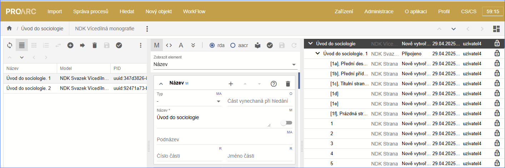
{width="6.267716535433071in" height="2.0833333333333335in"}Stejným způsobem zpracujeme a připojíme všechny díly (svazky) vícedílné monografie.
3.1.2.5 Přesunutí skenů do jiného objektu.
V případě, že se všechny díly (v tomto konkrétním příkladu 2) skenovaly do jednoho souboru, protože byly např. společně svázané, je potřeba přesunout skeny, které tam nepatří do správného svazku.
V úložišti si najdeme titul, k němuž jsme připojili skeny.
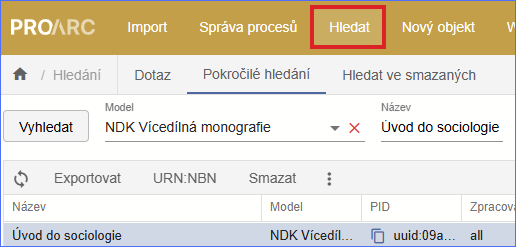
{width="5.375in" height="2.5729166666666665in"}Kliknutím na vybraný titul se dostaneme do editačního okna.
Ve struktuře klikneme na svazek, ve kterém máme uloženy skeny.
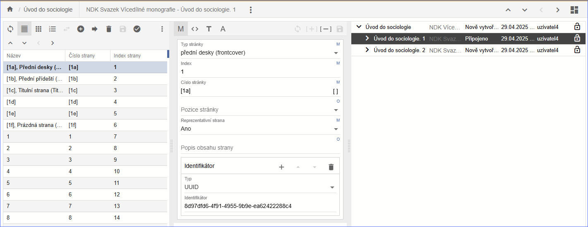
{width="6.267716535433071in" height="2.4166666666666665in"}V levé části označíme skeny, které budeme přesouvat a klikneme na ikonu přesunu.
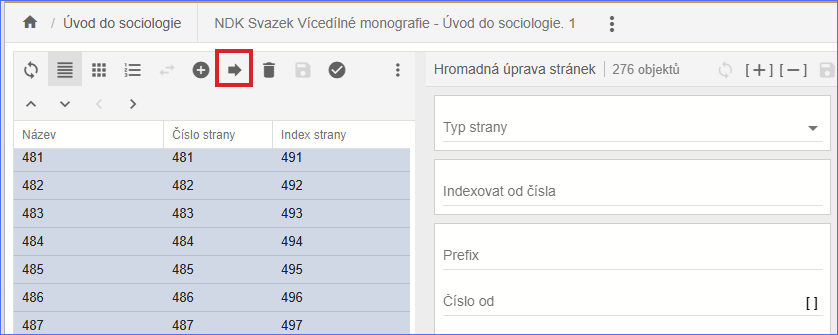
{width="6.267716535433071in" height="2.5in"}Vyhledáme a vybereme cíl přesunu. Skeny, které budeme přesouvat jsou podbarvené.
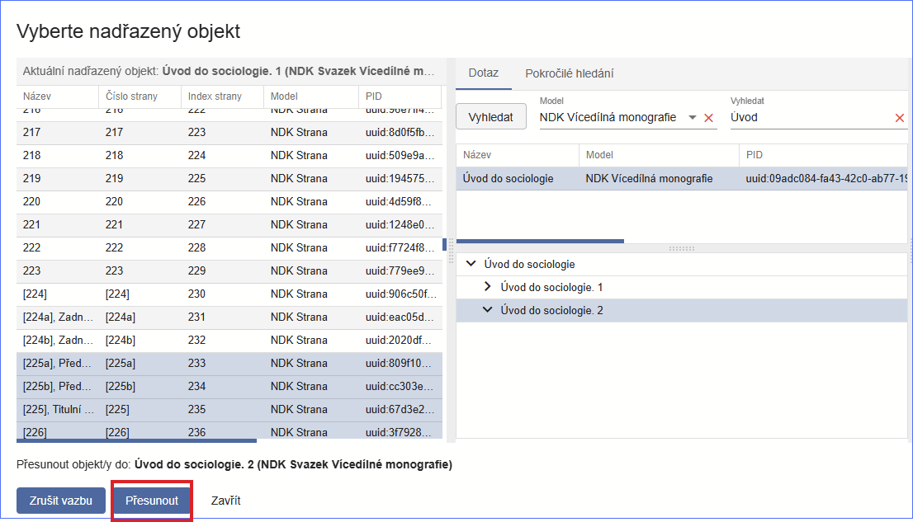
{width="6.267716535433071in" height="3.5833333333333335in"}Kliknutím na přesunout se zobrazí dialogové okno. Nad tlačítkem "Přesunout" si lze zkontrolovat cíl přesunu.
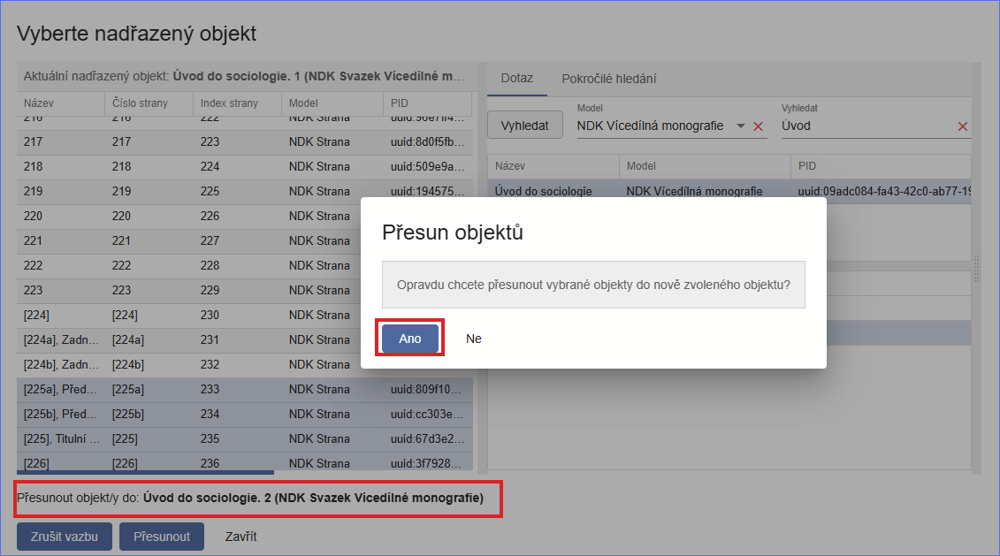
{width="6.267716535433071in" height="3.486111111111111in"}Přesuneme vybrané skeny.
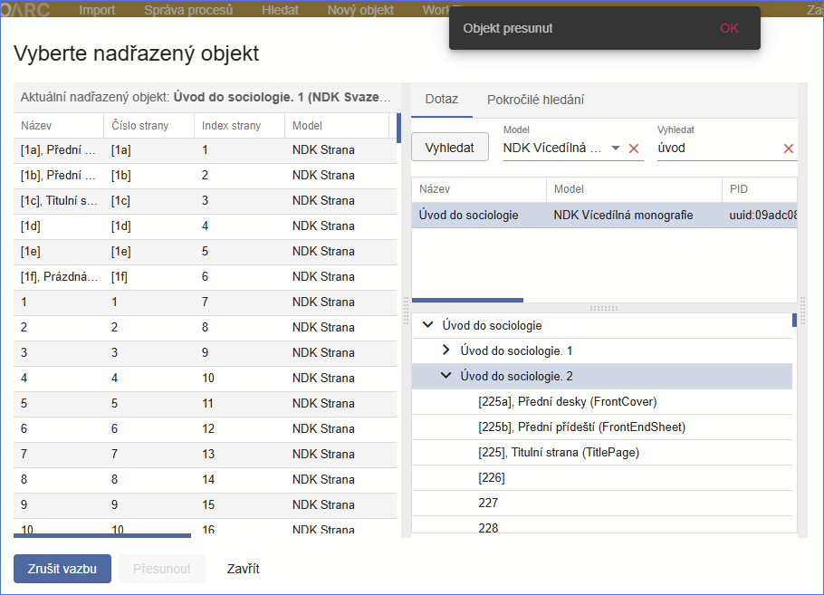
{width="6.267716535433071in" height="4.527777777777778in"}Přesunuté skeny a celá struktura vícedílné monografie vypadá v úložišti takto:
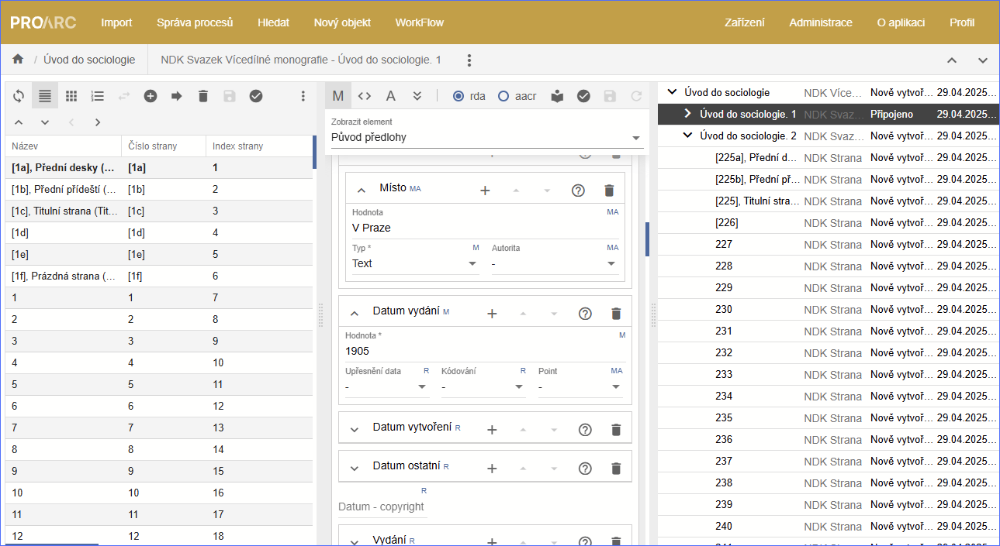
{width="6.267716535433071in" height="3.4305555555555554in"}Následně už je je postup stejný jako u monografií. URN:NBN lze přidělit celé vícedílné monografii nebo jednotlivým svazkům (v případě postupného zpracování po jednotlivých dílech).
3.1.2.6 Přidělení urn:nbn
Abychom mohli zpracovanou dávku exportovat pro zveřejnění v DK či archivaci, měli bychom jí přidělit urn:nbn. Pro export NDK PSP balíčků a archivních balíčků je přidělení povinné, export ve starším formátu pro Krameria je možný bez urn:nbn.
Urn:nbn můžeme dokumentu přidělit přímo v editaci v úložišti, funkce je skrytá na liště pod třemi tečkami:
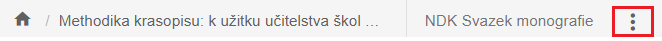
{width="6.263888888888889in" height="0.38680555555555557in"}{width="1.2397561242344708in" height="1.0939031058617672in"}
Další možností je přidělení v základním okně úložiště, kde je funkce umístěná na lištách obou horizontálních podoken:
{width="5.896527777777778in" height="0.49027777777777776in"}
Po stisknutí tlačítka se zobrazí dialogové ono, kde v roletce můžeme vybrat registrátora. Nejčastěji bude k dispozici jeden, ale pokud průběžně digitalizujeme i pro jinou instituci, která je sama registrátorem a máme povoleno jejím jménem registrovat dokumenty, můžeme ji mít v konfiguraci ProArcu.
{width="6.166666666666667in" height="1.9791666666666667in"}
Po registraci dostaneme zpětnou vazbu od resolveru a urn:nbn je automaticky zapsáno do metadat mezi platné identifikátory dokumentu:
{width="6.267716535433071in" height="2.611111111111111in"}
V ProArcu je ošetřena i zpětná vazba v případě, že omylem registrujeme dokument opětovně nebo dojde k chybě.
Urn:nbn nelze přidělit objektu, pod kterým nejsou přiřazeny skeny.
{width="6.267716535433071in" height="2.4166666666666665in"}
3.1.2.7 Export dokumentu
ProArc nabízí řadu exportních formátů, případně jejich propojení s externími systémy (digitálními knihovnami, úložišti ...). Není nutné mít v nabídce všechny dostupné formáty, lépe je nabídku omezit konfigurací konkrétní instance na potřebné varianty.
V této kapitole uvedeme pouze nejběžnější a nejvíce používané formáty.
Funkce Export je dostupná v editaci objektu v úložišti pod třemi tečkami a v základním okně úložiště (viz analogie s umístěním funkce přidělení urn:nbn v kap. [3.1.1.5]{.underline}).
Všechny druhy exportů se spouštějí jako procesy na pozadí a vytvářejí frontu, kterou lze sledovat ve správě procesů. Dokumenty postupně získávají statusy export naplánován -> exportování -> exportováno, v horším případě export skončil upozorněním či dokonce chyba exportu. Ve filtru pro pole Status nelze vybrat více hodnot, může tedy být výhodné nastavit filtr na hodnotu „Vše".
{width="6.267716535433071in" height="2.0972222222222223in"}
3.1.2.7.1 NDK PSP balíček
NDK PSP balíček je primárně používán k importům do digitální knihovny Kramerius s image serverem. Zároveň je formátem, ve kterém je nutno předat data do Národní digitální knihovny (např. na základě zpracování v projektu VISK) a ve kterém si knihovny mohou předávat data v rámci replikací.
NDK PSP balíček můžeme vyexportovat do lokálního exportního adresáře nebo přímo do nakonfigurované (napojené) instance Krameria. O cíli exportu rozhodneme v dialogovém okně volbou z roletek.
{width="6.041666666666667in" height="3.1666666666666665in"}
Licenci vybereme z dolní roletky:
{width="6.260416666666667in" height="3.5208333333333335in"}
3.1.2.7.2 Export pro Krameria
Export ve starším formátu „Kramerius" lze podobně jako u NDK PSP balíčku směřovat do lokálního adresáře (viz obrázek) a pak jej ručně přemístit k importu do Krameria, nebo jej lze odeslat přímo do Krameria, pokud je tato varianta dostupná v naší konfiguraci.
{width="6.145833333333333in" height="2.7604166666666665in"}
Probíhající export si můžeme zkontrolovat ve Správě procesů. Pokud nelze exportovat, objeví se u exportu chyba. Informace o chybě je vpravo pod ikonkou vykřičníku. Kliknutím na ni si zobrazíme detail chyby.
{width="6.267716535433071in" height="1.5972222222222223in"}
Např. chybný index stran
{width="6.267716535433071in" height="1.6527777777777777in"}
Kliknutím na název složky se dostaneme do úložiště přímo na chybný objekt.
Chybu si můžeme zobrazit i zde pomocí ikonky s vykřičníkem.
{width="6.267716535433071in" height="3.0277777777777777in"}
Po provedení opravy lze exportovat přímo z této obrazovky. Možnost exportu je skrytá pod symbolem tří teček.
{width="6.267716535433071in" height="4.041666666666667in"}
3.1.2.7.3 Archivace
Archivní balíčky se vytvářejí za účelem uložení dat na úložištích mimo ProArc. K dispozici je několik variant, jak s archivním balíčkem pracovat, zde zmíníme pouze základní formát:
{width="6.267716535433071in" height="2.0277777777777777in"}